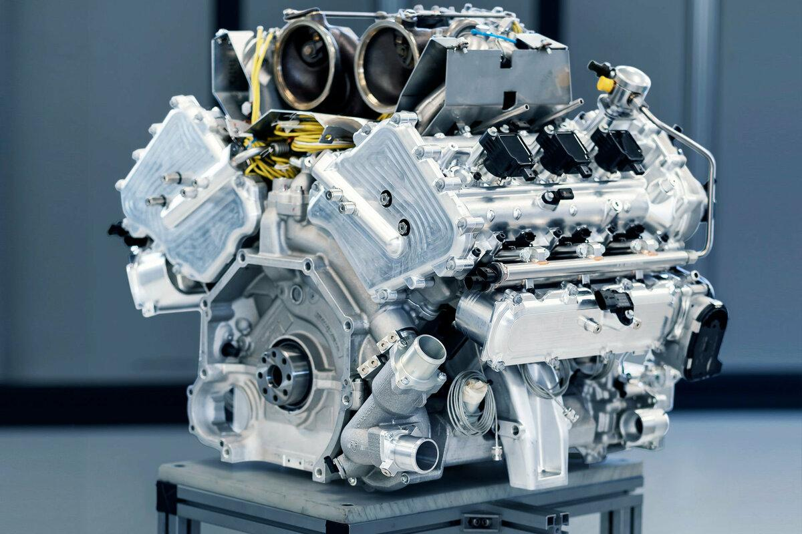

Двигатель внутреннего сгорания (ДВС): Техническое сердто современной цивилизации
Двигатель внутреннего сгорания (ДВС) — это сложный тепловой агрегат, в котором химическая энергия, заключенная в топливе, преобразуется в процессе его сгорания в тепловую, а затем — в механическую энергию, используемую для совершения полезной работы. Это устройство стало краеугольным камнем технического прогресса XX и XXI веков, обеспечившее mobility человечества и мощный толчок для промышленного развития.
Основной принцип работы
Фундаментальный принцип работы всех типов ДВС основан на сгорании топливно-воздушной смеси непосредственно внутри замкнутого рабочего объема — камеры сгорания. Это ключевое отличие от двигателей внешнего сгорания (как, например, паровые машины), где сгорание происходит снаружи. Энергия расширения раскаленных газов, образующихся при сгорании, воздействует на подвижный элемент двигателя (поршень или ротор), заставляя его двигаться. Это возвратно-поступательное или вращательное движение через механические передачи (кривошипно-шатунный механизм) преобразуется во вращательное движение коленчатого вала, которое и отбирается для привода колес, генераторов, винтов и других механизмов.
Классификация и виды ДВС
Двигатели внутреннего сгорания классифицируются по множеству признаков: По типу рабочего цикла: Четырехтактные: Рабочий цикл происходит за четыре хода поршня (такта): впуск, сжатие, рабочий ход (сгорание и расширение), выпуск. Отличаются большим КПД, экономичностью и стабильностью работы. Двухтактные: Сжатие и впуск, а также рабочий ход и выпуск совмещены. Цикл завершается за два такта. Проще по конструкции, имеют большую литровую мощность, но менее экономичны и экологичны из-за потерь топлива с выхлопными газами. По способу воспламенения:С принудительным зажиганием: В бензиновых и газовых двигателях смесь поджигается искрой от свечи зажигания.С воспламенением от сжатия (компрессионные): В дизельных двигателях highly compressed воздух нагревается до температуры, превышающей температуру воспламенения топлива, которое, впрыскиваясь в цилиндр, самовоспламеняется.По типу топлива: бензиновые, дизельные, газовые, многотопливные, водородные. По конструкции Поршневые (самые распространенные, с кривошипно-шатунным механизмом). Роторно-поршневые (двигатель Ванкеля, где энергия газов преобразуется во вращение треугольного ротора). Газотурбинные (устанавливаются на танках, вертолетах, мощных электростанциях).

Исторический контекст и эволюция
Идея ДВС была реализована в ряде изобретений throughout the XIX века. Первый практически usable двигатель создал Этьен Ленуар (1860). Знаменитый четырехтактный цикл, лежащий в основе большинства современных моторов, был теоретически обоснован Николаусом Отто в 1876 году. Рудольф Дизель в 1897 году предложил принцип воспламенения от сжатия, что привело к созданию highly efficient дизельного двигателя. Дальнейшая эволюция ДВС была направлена на увеличение мощности, надежности, экономичности и снижение вредных выбросов. Появление систем электронного впрыска топлива (заменивших карбюраторы), турбонаддува, систем изменения фаз газораспределения и сложных нейтрализаторов выхлопных газов сделало современные двигатели technological marvels.
Роль в современном мире и вызовы будущего
ДВС на протяжении десятилетий является основным силовым агрегатом в автотранспорте, авиации (поршневой), судоходстве, сельскохозяйственной и строительной технике. Однако в XXI веке его господство впервые поставлено под сомнение. Главными вызовами стали исчерпаемость нефтяных ресурсов, глобальное потепление и ужесточение экологических стандартов, требующих резкого сокращения выбросов CO2 и других вредных веществ. Это стимулировало бурное развитие альтернативы — электромобилей на аккумуляторах и на водородных топливных элементах. Тем не менее, благодаря колоссальной инфраструктуре, отработанности технологии, высокой энергоемкости топлива и продолжающимся усовершенствованиям (гибридные силовые установки, синтетические экотоплива), двигатель внутреннего сгорания останется важной частью глобальной энергетической системы еще на долгие годы.